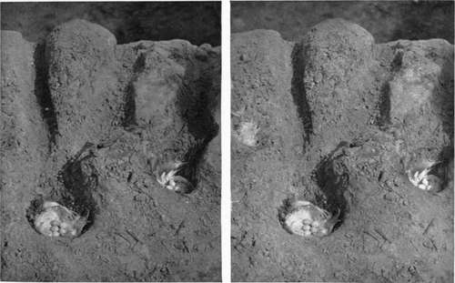

Exposure Meter
Description
This section is from the book "Nature Photography For Beginners", by E. J. Bedford. Also available from Amazon: Nature Photography for Beginners.
Exposure Meter
Every photographer should possess and use an exposure meter. However experienced he may be, he will find this an additional aid to correct exposure; and correct exposure means a good negative. The different conditions under which the Nature Photographer will have to work will often make it exceedingly difficult, if not impossible, to correctly estimate the required exposure, and the actual difference in the actinic value of the light, say in the open and under trees, requires to be tested before it can be appreciated by the beginner. Therefore, I say, always carry and make use of an exposure meter. There are two well-known forms on the market—the Watkins and the Wynne—and either will be found perfectly reliable. The Nature Photographer should always carry a note-book in which full particulars of the exposure, light, lens, stop, plate, and any other remarks thought necessary should be entered immediately after photographing a subject. This will often prove invaluable for future guidance, and in the case of duplicate exposures will enable one to judge of the kind of development required to get the best result out of the plate. Some pieces of string will be found useful; amongst other things, to tie back any branches or foliage which may project into the field of view or which conceal the object it is desired to photograph; and a sheet or two of white tissue paper or a newspaper, and a small mirror five or six inches square, will also come in handy at times. The mirror will sometimes be useful for reflecting light on to some dark portion of the subject, and also will allow one to alter the stop of the lens or set the shutter by the reflection seen in the mirror when the front of the camera is in such a position that the lens or shutter itself cannot be seen. The use of the tissue paper or newspaper will be described later on when referring to field work.
Fig. 15. Sand-Martins' Nests.
This completes the list of apparatus absolutely necessary. As to the case or cases to contain the kit, it will perhaps be best to leave the choice to each individual. If many plates are carried it will be found a convenience to divide the weight of the whole kit and carry some of it in a waterproof satchel on one's back and some in a separate hand-bag.
A few hints on apparatus in general and the care of it may perhaps be useful. Cameras and lenses, etc., should always be kept in their cases or in a dry cupboard when not in use, and not left about in a room in the dust or where they are subjected to considerable changes of temperature. One's apparatus may have been put away during the winter and not used for some time. When this has occurred it should be carefully examined previous to use, in order to make sure everything is in proper working order. Previous to commencing the season's work the camera should be set up on its tripod, the lens being screwed into its flange and capped, the focussing screen raised, and the head inserted under the focussing cloth and kept there for some time in order to ascertain whether there are any pinholes or other places letting in light, and the shutter, especially if of the roller-blind type, should be also examined to see that it contains no pinholes in the blind. If any interior fittings have become bright by wear they should receive a coating of liquid dead black, prepared for the purpose and sold by all dealers in photographic apparatus, and any parts working stiffly might have a little black lead rubbed on the surfaces coming in contact. The careful attention to little points such as these will ensure the satisfactory working of the different parts when in the field. During cold weather the blind of the shutter, which is made of a rubber material, usually becomes stiff and will not work properly when in this condition. It should be placed before a fire—but not too near—and gently warmed, and when one portion is thoroughly pliant, it should be set by winding up the other portion of the blind, which should then be similarly warmed. In my earlier experience I found on several occasions, when trying to use my camera during cold weather, that the blind of the shutter stuck and would not close on the release being pressed, and the plate was consequently spoilt. It was some time before I discovered the cause and the remedy for it.
Another possible source of trouble, and one, perhaps, difficult to account for by an inexperienced operator, is connected with the lens. This, when subjected to a sudden change of temperature, may condense moisture on its surface either outside or inside the camera, and in the latter case would not be seen. Until this condensation has passed off, the lens, of course, will not give a well-defined image. When one's head is under the focussing cloth for a long time the breath may be condensed on the focussing screen in a similar way, and it will be impossible to properly see the image or to obtain a satisfactory focus while this state of things remains. A short time carefully spent in overhauling all the items of one's kit previous to bringing them into use, after having been laid by for a time, will often be the means of saving a loss of both time and temper, and will moreover conduce to the best results.
One word of warning with reference to the dark slides or plate-holders. Do not in the excitement of the moment forget to draw the shutter of the slide previous to exposing on the subject. I have had this unfortunate experience on several occasions, and it generally happens, in cases of this kind, that the subject has disappeared before another exposure was possible.
The photographer when out for the special purpose of stalking shy subjects or watching birds or animals should wear clothes of as quiet a colour as possible; he will then be able to make himself much less conspicuous. Mr. R. Kearton, in one of his most interesting books,* describes a reversible coat he had specially made of a brown colour one side and a green the other, so that he could wear either side which suited his surroundings best.
* Wild Nature's Ways.
Continue to:
Tags
nature, photography, art, birds, camera